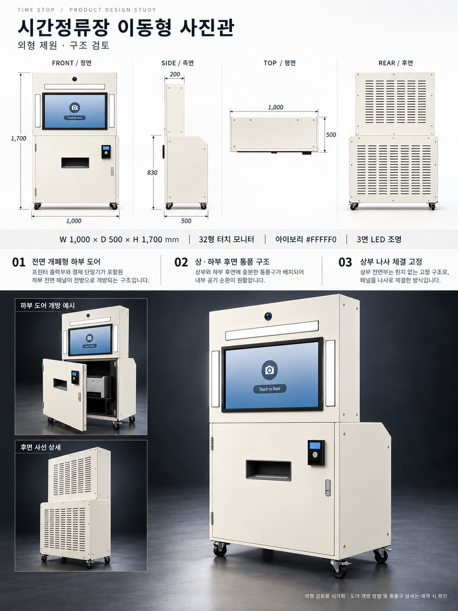
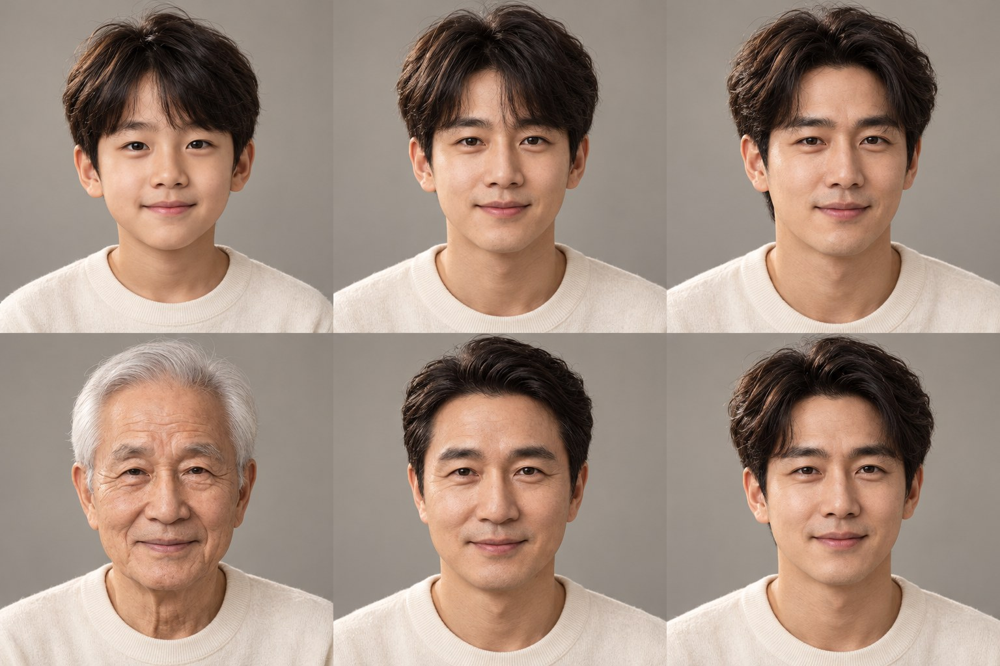
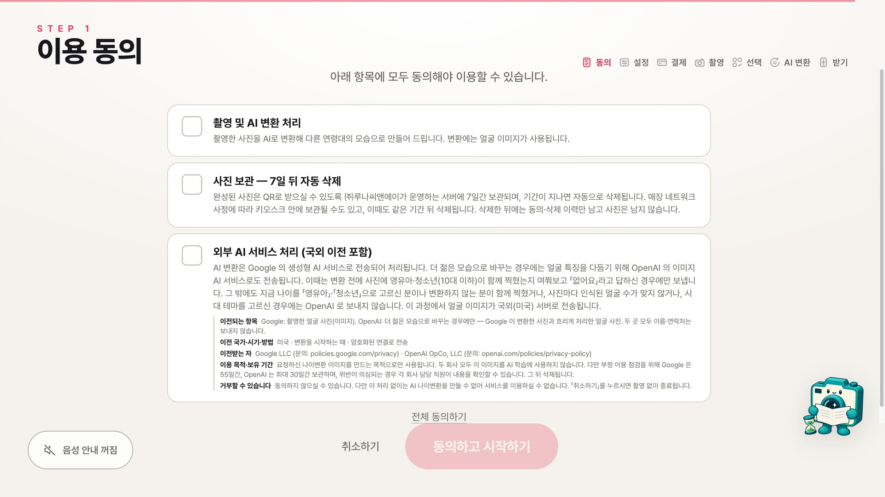

다른 나이의 나
사진 속 인물과 원하는 연령대를 선택해 새로운 모습을 만나보세요.
시간을 담는 새로운 사진 경험
촬영부터 인공지능 나이 변환, 인화까지.
세대와 시간을 잇는 사진관, 시간정류장.
시간정류장 소개
시간정류장은 인공지능으로 다른 연령대의 모습을 만들어 보는 사진관입니다. 오늘의 표정에 새로운 상상을 더합니다.
사진 속 인물과 원하는 연령대를 선택해 새로운 모습을 만나보세요.
가로 3컷, 세로 4컷과 시대·지역별 테두리 장식으로 꾸며보세요.
인화한 사진을 간직하고, 사진 받기 코드로 휴대폰에도 저장하세요.
인공지능으로 만든 모습은 실제 과거 사진이나 미래의 모습을 예측한 결과가 아닙니다.

공간에 더하는 사진 경험
간결한 외관과 큰 터치 화면.
이동을 고려한 구조로 다양한 공간에서 사진 경험을 제안합니다.
제공된 설계안 기준이며 최종 사양은 상담 시 확인합니다.
시간을 건너는 두 가지 만남
자라는 시간과 되돌아가는 시간.
눈빛은 그대로, 달라지는 나의 시간.
성장과 청춘의 변화를 만나보세요.

아이 → 청소년 → 청년
노년 → 중장년 → 청년
인공지능으로 만든 연출 예시입니다. 실제 미래 예측이나 과거 사진 복원 결과가 아닙니다.
이용 방법
시간 여행을 함께하는 작은 안내자
화면의 안내를 따라 선택하고 촬영하세요.
그림 버튼을 눌러 이용 화면을 살펴보세요.

1단계 / 7단계
사진 촬영과 처리 안내를 확인합니다.
위의 그림 버튼을 누르면 해당 화면을 볼 수 있습니다.
아이 → 청년 → 의사
인공지능으로 만든 꿈과 성장의 연출 예시입니다.
제공된 개발 화면의 예시입니다.
실제 요금과 사진 저장 기간은 현장 안내를 확인해 주세요.
세대를 잇는 한 장의 사진
서로 다른 시간을 살아온 우리,
같은 시간에서 만나다.
어린 손자와 할아버지, 서로를 바라보다.
인공지능으로 만든 연출 예시 · 실제 미래 예측이나 과거 사진 복원 결과가 아닙니다.
우리 공간에서 시작하기 ↗도입 문의
희망 장소와 일정을 알려주세요.
새로운 사진 경험을 함께 준비합니다.